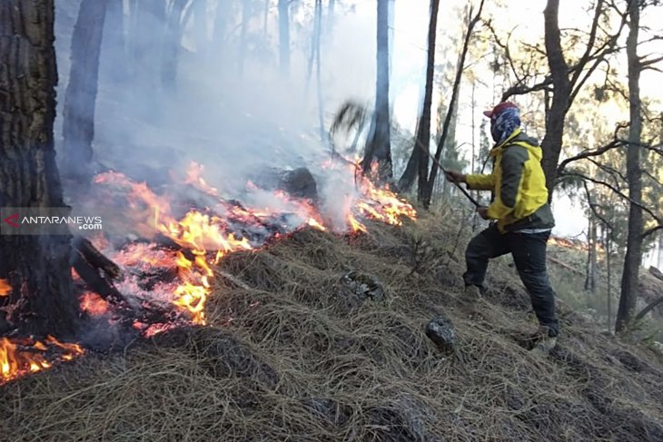

 Petugas tengah berupaya memadamkan api yang membakar tumpukan daun cemara pada Blok Gentong Growah, Gunung Arjuno, Kecamatan Bumiaji, Kota Batu, Jawa Timur. (FOTO ANTARA/HO-UPT Taman Hutan Raya Raden Soerjo)
"Kami akan sisir usai kebakaran. Untuk bara api, berdasarkan pertimbangan tim, kondisi sudah aman dan dipastikan yang terbakar adalah lantai hutan dengan serasah daun cemara kering"
Kota Batu, Jawa Timur (ANTARA) - Kebakaran hutan kurang lebih seluas 40 hektare yang terjadi di kawasan Taman Hutan Raya (Tahura) Raden Soerjo atau Lereng Gunung Arjuno, Kecamatan Bumiaji, Kota Batu, Jawa Timur, berhasil dipadamkan pada Senin.
Kepala Unit Pelaksana Teknis (UPT) Tahura Raden Soerjo Ahmad Wahyudi, di Kota Batu, Jatim, mengatakan bahwa kebakaran berhasil dipadamkan kurang lebih pada tengah hari, dengan lokasi kebakaran pada Blok Gentong Growah, Gunung Arjuno.
"Api sudah berhasil dipadamkan, lokasi kebakaran pada Blok Gentong Growah kurang lebih seluas 40 hektare," kata Wahyudi, kepada ANTARA, Senin.
Ia menjelaskan, kebakaran yang terjadi di Lereng Gunung Arjuno tersebut, memiliki tipe kebakaran lantai hutan. Bagian yang terbakar adalah serasah dari daun cemara yang menumpuk dan kering pada saat musim kemarau.
Menurut dia, luasan lahan yang terbakar diperkirakan 40 hektare. Pihaknya akan memastikan dengan mengirimkan tim yang akan menyisir lokasi setelah kebakaran untuk memastikan kondisi aman dan besaran area yang terbakar.
"Kami akan sisir usai kebakaran. Untuk bara api, berdasarkan pertimbangan tim, kondisi sudah aman dan dipastikan yang terbakar adalah lantai hutan dengan serasah daun cemara kering," katanya.
Pihaknya memastikan tidak ada korban jiwa dalam kebakaran yang ditengarai mulai terjadi pada Minggu (28/7) kurang lebih pukul 9.30 WIB. Para pendaki yang pada saat kejadian berada di Gunung Arjuno, semuanya telah dievakuasi dan selamat.
"Semua pendaki, pada Senin (29/7) kurang lebih pukul 10.00 WIB, sudah lapor turun di Pos Sumberbrantas," kata Ahmad Wahyudi.
Dalam upaya untuk memadamkan api yang melalap lereng Gunung Arjuno tersebut, diterjunkan 15 orang dari Posko Sumberbrantas, 10 personel Tahura Raden Soerjo, dan 10 orang relawan.
Badan Penanggulangan Bencana Daerah (BPBD) Kota Batu mendukung persiapan logistik dan tenaga cadangan pada Posko Sumberbrantas, dan tambahan personel dari Palang Merah Indonesia (PMI).